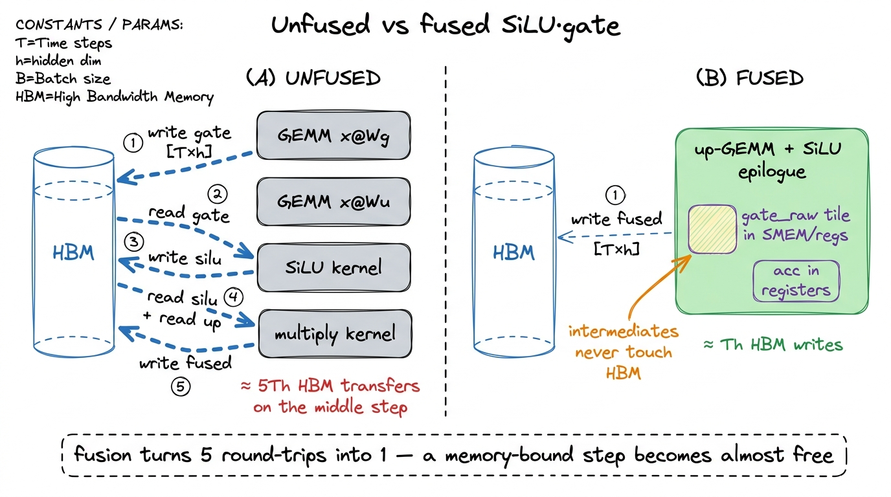
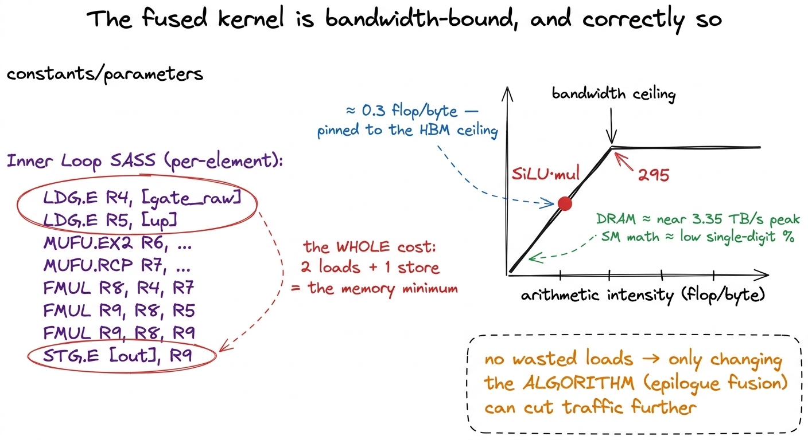
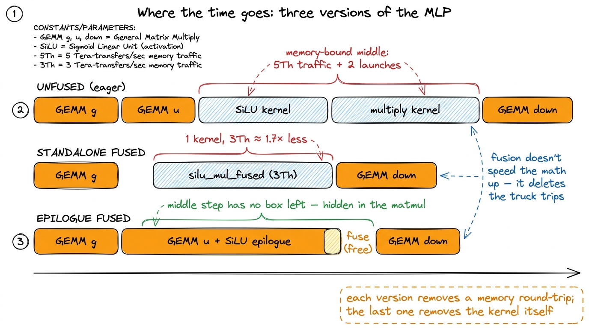

The SwiGLU kernel
Every transformer you have ever run spends a surprising fraction of its inference time not in attention, but in the boring block that comes after it: the MLP. And inside a modern MLP there is one small, specific kernel that shows up in Llama, in Mistral, in PaLM, in DeepSeek, in almost every recent model — the SwiGLU activation. It is three matmuls with a funny-shaped nonlinearity wedged in the middle, and it is exactly the kind of thing that is trivial to write correctly and easy to write slowly. That gap — correct-but-slow versus correct-and-fast — is the whole point of this article.
Here is the question we are going to answer, stated plainly so you can hold me to it: the arithmetic in the middle of SwiGLU is almost nothing — a sigmoid and two multiplies per number — so why is the naive version slow, and what exact move makes it fast? If you have never written a GPU kernel, that is fine. We will build every idea from the ground up, do the byte-counting by hand, and never assume you already know why a "memory-bound" op is slow. By the end you will be able to look at any little elementwise operation between two matmuls and know, in about ten seconds, both why it is wasteful and how to make it nearly free.
SwiGLU is also a favorite target on KernelBench and in Stanford's CS149 asst5, for a good reason: it is small enough to hold in your head and rich enough that fusion actually matters. We are going to write the naive version, look hard at why it leaks memory bandwidth, fuse the cheap part, and measure the win — and then push the fusion one level deeper into the matmul itself, which is what real serving stacks actually do.
First, what is a kernel even doing, and why do bytes cost more than flops?
Before SwiGLU, one paragraph of foundation, because the entire article hangs on it. A GPU has two very different things it is good at. It has enormous compute — an H100 can do on the order of hundreds of trillions of floating-point operations per second (flops) on its tensor cores. And it has memory bandwidth — the rate at which it can move numbers between its big off-chip memory (HBM, high-bandwidth memory) and the chip. On an H100 that bandwidth is about 3.35 TB/s, which sounds huge until you notice the mismatch: the chip can compute far faster than it can fetch the numbers to compute on.
That mismatch is the single most important fact in kernel engineering, and Horace He's Making Deep Learning Go Brrr has the perfect analogy for it. Picture a factory (the compute units) fed by a delivery truck (the memory bus). If you double the factory's speed but leave the truck the same size, the factory just sits idle waiting for parts. Most deep-learning operations are truck-bound, not factory-bound. The truck is the bottleneck.1 The gap has been widening for a decade. Compute per chip has grown far faster than off-chip bandwidth generation over generation, so more and more operations that used to be "fast enough" have slid into being bandwidth-bound. This is why fusion keeps getting more valuable, not less.
The number that decides which side you are on is arithmetic intensity: flops performed per byte moved. If you do a lot of math per byte you fetch, you are compute-bound (the good, factory-limited case). If you do very little math per byte, you are memory-bound (truck-limited). The crossover on an H100 is around 295 flops per byte — that is its "ridge point." Anything below that is bandwidth-bound. Keep the number 295 in your pocket; we will compare SwiGLU's activation to it and the result is almost comical.
What SwiGLU actually computes
Now the block itself. Strip away the framework and the MLP is three weight matrices — a gate projection Wg, an up projection Wu, and a down projection Wd. For an input x of shape [T, d] (T tokens, model dimension d), with hidden dimension h:
gate = SiLU(x @ Wg) # [T, h]
up = x @ Wu # [T, h]
out = (gate * up) @ Wd # [T, d]Read that top to bottom. First we project x up into a wider hidden space two different ways: once through Wg to get the gate, once through Wu to get the up. We run a nonlinearity (SiLU) on the gate. We multiply the gate and the up together, element by element. Then we project the result back down through Wd to the model dimension.
The SiLU — also called swish — is SiLU(z) = z * sigmoid(z) = z / (1 + e^-z). It is a smooth, slightly-dipping version of ReLU. The gate * up is a plain element-wise (Hadamard) product: same-shaped tensors, multiply matching positions. So the whole block is: two matmuls into the hidden dimension, a nonlinearity, an element-wise multiply, and one matmul back down.2 The "GLU" in SwiGLU is Gated Linear Unit: the up-projection is modulated element-wise by a learned gate. Noam Shazeer's one-page "GLU Variants Improve Transformer" is the origin. The empirical win over a plain GELU-MLP is small but consistent, which is exactly why everyone shipped it — and why every serving stack now needs a fast kernel for it.
Three matmuls, two of which we hand straight to a good GEMM kernel because that is where the FLOPs are. The interesting part — the part that is ours to optimize — is the SiLU(...) * (...) in the middle. That little multiply is the whole subject of this article, and I want to convince you that although it is arithmetically trivial, doing it naively is where unfused frameworks quietly bleed performance.
 figure rendering · The SwiGLU block. The matmuls dominate FLOPs; the activation-and-gate
figure rendering · The SwiGLU block. The matmuls dominate FLOPs; the activation-and-gate The hypothesis: the middle is where we leak bytes
Let me pose the naive reader's objection, because it is a good one. "The multiply in the middle is tiny — one sigmoid and two multiplies per element. How can something that does less work be the slow part?" Excellent question. The answer is that on a GPU the slow part is almost never the arithmetic; it is the fetching and storing. Let us count.
Here is the naive way, the way an unfused framework does it straight out of the box. Run the two GEMMs. Materialize gate and up as full [T, h] tensors in HBM. Launch a kernel that reads both back, applies SiLU, multiplies, writes a [T, h] result. Then run the third GEMM on that.
Count the traffic on the middle step alone, and let us make it concrete with a tiny by-hand example first. Say T = 4 tokens and h = 8 hidden units, so each tensor is T × h = 32 numbers, each a 4-byte float. To do the element-wise work we must read gate (32 numbers) and read up (32 numbers), that is 64 numbers in, and write the result (32 numbers) out. That is 2·32 in plus 32 out = 96 number-transfers to do 32 elements' worth of trivial math. Three memory touches per element. Scale it back up and it is exactly 3Th element-transfers to do about Th cheap flops.
Now put that against the ridge point. Each element costs about a handful of flops — a sigmoid (an exp, an add, a reciprocal) and a couple of multiplies, call it ~5 flops — but forces 3 × 4 = 12 bytes of memory traffic. That is an arithmetic intensity of about 5 / 12 ≈ 0.4 flops per byte, well under one. The H100 wants 295 flops/byte before it is happy. We are delivering under one-five-hundredth of that.
From the three regimes and the roofline model we know exactly what this means: the step is hopelessly memory-bandwidth-bound, hundreds of times below the ridge. The SiLU transcendental is not the problem. The round-trip through HBM is. The factory is idle; the truck is doing all the work.3 The GPU computes a SiLU in a handful of SFU (special-function-unit) cycles — sigmoid decomposes into an exp and a reciprocal, both hardware fast paths. The cost of this kernel is entirely the 2Th loads and the Th store, not the arithmetic. If you sped up the math by 10× the kernel would run at exactly the same speed, because the math was never the bottleneck.
 figure rendering · The factory (compute) is idle while the truck (bandwidth) does all the
figure rendering · The factory (compute) is idle while the truck (bandwidth) does all theThe fix is the single most important idea in inference-kernel engineering, and Making Deep Learning Go Brrr hammers it with a beautifully simple example. Consider x.cos().cos(). Done naively that is four memory touches: read x, write x1, read x1, write x2. But mathematically it is one pass over the data. If you fuse the two cosines into a single kernel you touch memory twice — read x, write result — and get a 2× speedup for free, because the arithmetic was never the cost. The punchline the article makes is almost shocking: a fused x.cos().cos() takes nearly the same time as a single x.cos(), because both move the same bytes. Bytes are the currency. Flops are nearly free.
That is our move. Do not write gate and up back to HBM as separate tensors and read them again. Fuse the SiLU and the multiply into a single kernel so each element makes exactly one round trip. Better still, fuse the activation into the epilogue of a matmul so the values never leave on-chip memory at all. Let us build up to that.
The fused element-wise kernel
Start with the standalone fused version — the one CS149 asst5 asks you to write — because it is the cleanest place to see the idea. We assume the two GEMMs already produced gate_raw = x @ Wg and up = x @ Wu in global memory. We collapse the SiLU and the multiply into one pass:
// One thread per element of the [T, h] hidden tensor.
// Reads gate_raw and up ONCE each, writes fused ONCE.
__global__ void silu_mul_fused(int n,
const float* __restrict__ gate_raw,
const float* __restrict__ up,
float* __restrict__ out) {
const int i = blockIdx.x * blockDim.x + threadIdx.x;
if (i >= n) return;
const float g = gate_raw[i];
const float silu = g / (1.0f + __expf(-g)); // SiLU(g)
out[i] = silu * up[i]; // gate * up
}Let me walk this line by line, because if you are new to CUDA this is the whole mental model of a kernel in nine lines. A kernel is a function that runs once per thread, and we launch thousands of threads at once. Each thread computes its own global index i from its block index and its position inside the block — that is the blockIdx.x * blockDim.x + threadIdx.x line, the single most common line in all of CUDA. The if (i >= n) return; guards the tail when the number of elements is not a perfect multiple of the block size. Then this thread grabs its one gate value and its one up value, computes SiLU, multiplies, and writes its one output. Thread number 5 owns element number 5, and nothing else. Multiply that by Th threads and the whole tensor is processed in parallel.
Why is this already better than the framework default? Because look at what the framework default actually is: not one elementwise kernel but two. A SiLU kernel followed by a multiply kernel. Count them. The SiLU kernel reads gate and writes silu — 2Th transfers. The multiply kernel reads silu, reads up, writes the result — 3Th transfers. That is 5Th element-transfers across two separate kernel launches. Our single fused kernel does it in 3Th in one launch. On bytes alone that is already 5/3 ≈ 1.7× fewer trips, and we also deleted a kernel launch, which matters more than you would think for small tensors.4 Kernel launches are not free — each one costs a few microseconds of CPU-to-GPU overhead. For a big [T, h] tensor that overhead is a rounding error, but for a single decode step (T = 1) it can dominate, and you are suddenly in the overhead regime where the fix is CUDA Graphs, not bandwidth tuning. See kernel launch anatomy.
 figure rendering · Zooming from the whole tensor down to one thread. Each thread owns one
figure rendering · Zooming from the whole tensor down to one thread. Each thread owns oneThe genuinely fast version: fuse into the GEMM epilogue
Here is where a curious reader should push back again: "You saved a kernel and cut 5Th to 3Th. But we are still reading gate_raw and up back out of HBM after the matmuls wrote them there. Isn't that wasteful too?" Yes. It is. And getting rid of it is the real prize.
To see how, you need one fact about how a good matmul works. A tiled GEMM does not compute the whole output at once; it computes it one tile at a time. A block of threads loads a tile of x and a tile of W into fast on-chip shared memory, multiplies-and-accumulates across the k dimension into an accumulator held in registers, and only when the tile is fully accumulated does it write that tile back out to HBM. The full GEMM ladder — from a naive 1.3% of cuBLAS up through tiling, blocktiling, and vectorization to 93.7% — is all about doing that accumulation efficiently. The key point for us: right before it writes a tile, the up-GEMM is holding that tile's values in registers, on-chip, hot.
So instead of writing plain up to HBM, teach the up-GEMM's epilogue — the little bit of code that runs after the accumulation, right before the store — to load the matching gate_raw tile, apply SiLU, multiply, and write the already fused result. Now up never becomes a separate HBM tensor at all. The only thing that hits global memory is the final fused [T, h] tile, exactly once.
// Epilogue fusion (sketch): after the k-loop accumulates `acc`
// for this output tile of (x @ Wu), fold in the gate before the store.
// gate_raw_tile lives in shared memory / registers already.
#pragma unroll
for (int t = 0; t < TILE_M * TILE_N / THREADS; ++t) {
float u = acc[t]; // x@Wu for this element, in a register
float g = gate_raw_tile[t]; // x@Wg, staged on-chip
float silu = g / (1.0f + __expf(-g));
C_tile[t] = silu * u; // ONE HBM write, fused
}Count the traffic now, on our little T=4, h=8 example. Unfused two-kernel path: 5Th = 160 transfers. Standalone fused kernel: 3Th = 96. Epilogue-fused: the up values were already in registers (0 extra reads), we load the gate tile once (Th), and write the fused result once (Th) — and even the gate read can often be staged during the matmul rather than as a fresh HBM trip. In the limit, the entire SiLU-and-gate cost collapses into the single HBM write the matmul had to do anyway. It becomes, essentially, free. This is the same move operator fusion applies everywhere; SwiGLU is just its cleanest example.5 In practice production kernels fuse the gate GEMM and the up GEMM together too — one kernel computes both projections and the SiLU·multiply in a single pass, because x is read once and shared between them. That is what vLLM's and TensorRT-LLM's fused SwiGLU kernels do. We keep them separate here only to make the epilogue idea legible.

figure rendering · Unfused (A) writes every intermediate to HBM and reads it back — fiveProfiling it
Time to stop hypothesizing and look at what the hardware actually does. Point Nsight Compute (ncu) at the standalone fused kernel and the story is exactly what the regime analysis predicted, which is the satisfying part. DRAM throughput sits near the top of the roofline — we are pulling a large fraction of the H100's 3.35 TB/s of HBM3 — while compute throughput (SM utilization on the math pipes) is in the low single-digit percent. The kernel is memory-bound.
And here is the subtle thing I want you to internalize: memory-bound is the correct place for an element-wise op to be. It does not mean the kernel is bad. It means we are limited by the bytes we genuinely must move, not by wasted work. A "good" elementwise kernel is one that saturates bandwidth and does zero redundant loads. When I first started profiling these, I expected a saturated-bandwidth kernel to look like a problem to fix — I was wrong. For this op, pinned-to-the-bandwidth-ceiling is the finish line. The only way to go faster is to move fewer bytes, and that is an algorithm change (epilogue fusion), not a tuning change.
The SASS confirms there is nothing left to shave in the body. The inner work compiles to a MUFU.RCP (reciprocal) and an MUFU.EX2 (base-2 exponential) for the sigmoid, a couple of FMUL/FADD, and — critically — exactly two LDG.E loads and one STG.E store per element. Two loads and a store. That is the theoretical minimum for reading two inputs and writing one output. There is no fat.

figure rendering · The SASS is minimal — two loads and a store per element — and the roof6 __expf maps to the fast SFU exponential (MUFU.EX2 after a log2 rescale), not the slow accurate expf. For an activation this is exactly right — the error is a fraction of an ULP and invisible after the next matmul re-mixes everything. If you see expf in your SASS you left roughly 10× of activation cost on the floor. This is a common, silent mistake.
There are no redundant loads. The kernel is doing the minimum memory traffic its algorithm allows. So — and this is the whole lesson of profiling it — the only way to reduce traffic further is to change the algorithm, which is precisely what epilogue fusion does by deleting two of those loads entirely. The profiler does not tell you to fuse; it tells you the kernel is honest, and then you reason your way to fusion.
Putting a number on it
So where does this land? Let me be careful and honest about the multiples, because sloppy speedup claims are the easiest way to lose a reader's trust.
The standalone fused kernel is bandwidth-saturated. It runs at essentially the speed of pushing 3Th floats through HBM, against the ~5Th the naive two-kernel path moved. On bytes alone that is about 1.7×. Fold in the saved kernel launch and, for realistically sized tensors where launch overhead is small, the measured win hovers around that same ~1.7× — the closer you get to launch-dominated (tiny T), the more the deleted launch pushes it higher.7 The exact multiple depends on T and h. At very small T — a single decode step, T = 1 — the tensor is so small the kernel is dominated by launch overhead rather than bandwidth. There the two-launches-to-one-launch saving matters more than the byte saving, and past a point the real fix is CUDA Graphs to amortize launches across the whole layer stack. See prefill vs decode.
Epilogue fusion does better still, and by a different mechanism. It removes the fused kernel's own launch and its 2Th input reads, because the up values are already in registers and the gate is staged on-chip. In end-to-end MLP terms, the entire SiLU-and-gate cost effectively disappears into the shadow of a matmul that had to write its output tile anyway. You do not measure it as a separate kernel because there no longer is one. That is the difference between "I made the elementwise kernel 1.7× faster" and "I made the elementwise kernel vanish," and the second is the one that ships.

figure rendering · The same MLP three ways. Unfused spends real time in two fat memory-boWhere the FLOPs really are
It is worth saying the quiet part out loud so you keep perspective: this kernel is not where most of your inference time goes. The two hidden-projection GEMMs and the down-projection GEMM are the compute. Getting those to a high fraction of cuBLAS is the GEMM ladder's job — the same long climb from a naive 1.3% of cuBLAS up through tiling, blocktiling, vectorization, and warptiling to 93.7%. The SwiGLU activation is the connective tissue between those matmuls, not the main event.
But connective tissue is exactly where unfused frameworks bleed, precisely because it is easy to overlook. A model with, say, 32 layers runs this block 32 times per forward pass; every unnecessary HBM round-trip you leave in the middle is paid on every layer, every token, every request. Multiply a "small" 2Th-byte waste by 32 layers by thousands of tokens by every request in a serving fleet and it stops being small. Fusing it is not a heroic optimization — it is table stakes, and it is the reason torch.compile and every serving stack (vLLM, TensorRT-LLM, SGLang) ship a fused SwiGLU / SiLU-mul kernel rather than three eager ops.
The mental model to carry forward is the one this whole site keeps returning to, and it is worth memorizing as a single sentence: matmuls are compute-bound and belong on tensor cores; everything between the matmuls is memory-bound and belongs fused into the nearest matmul's epilogue. SwiGLU is the canonical, minimal, real-world instance of that rule. The factory does the matmuls; you must never let the truck make a trip it did not have to.
Once you can write this fused kernel and read its roofline in under a minute, you can do the exact same move for RMSNorm, for softmax, for bias-plus-GELU, for the residual add, for quantize/dequantize around an FP8 matmul. It is the same trick every single time — fuse the cheap element-wise thing into the expensive tensor-core thing so the bytes only move once — and honestly, that trick is most of what "kernel engineering for inference" actually is. Learn it here, on the smallest example, and you have learned it everywhere.